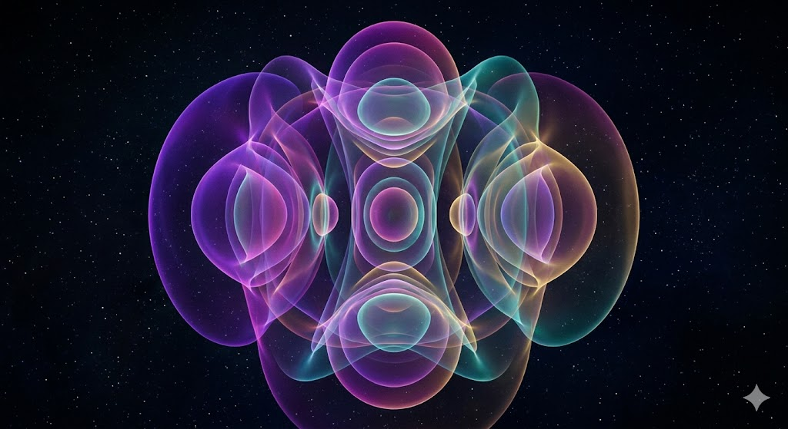

The wavefunction ψ(x) describes the quantum state of a particle.
The probability of finding the particle is:
|ψ(x)|²
For n = 1 → highest probability at center
For n = 2 → zero probability at center
This differs from classical physics, where particles are equally likely everywhere.
n = 1